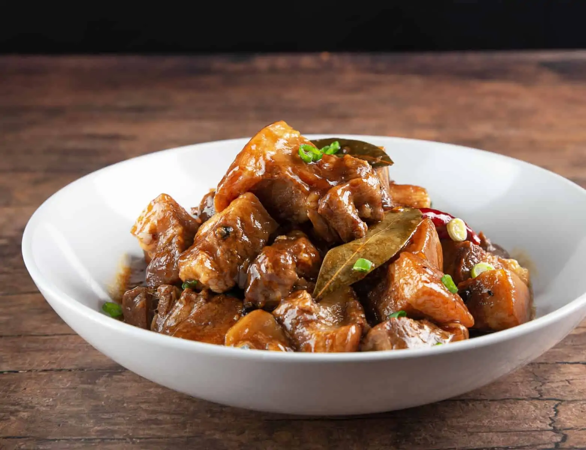

Often, when people think of Filipino food, the first thing that comes to mind is Adobo. And for good reason! Adobo is the perfect dish.
Adobo Sauce
Thickener
Garnish
Saute Onion and Spices in Instant Pot: Press "Saute" button to "Sauté More" function to heat up your Instant Pot. Wait until it says "HOT" on the screen. Make sure your Instant Pot is as hot as it can be.
Add 1 tbsp (15ml) peanut oil or olive oil in the Instant Pot's inner pot. Make sure the whole bottom is covered with oil.
Add the sliced onion in Instant Pot, then saute for 3 minutes. After 3 minutes, add in 12 crushed garlic cloves, 1 tbsp sliced ginger, 1 tbsp (12.5g) brown sugar, 1 tsp (4g) whole black peppercorn, 1 dried red chili, and 4 dried bay leaves. Saute for another minute.
Deglaze by scrubbing all the flavorful brown bits off the bottom of the pot with a wooden spoon. Give it a quick mix.
Pressure Cook Pork: Add 2 lbs cubed pork belly in Instant Pot. Give them a few stirs and make sure all the pork cubes are partially submerged in the cooking liquid.
With Venting Knob in Venting Position. Close the lid. Turn Venting Knob to Sealing Position. Pressure Cook at High Pressure for 15 minutes, then Natural Release for 10 minutes. Release the remaining pressure by turning Venting Knob to Venting Position. Open the lid carefully.
Thicken Adobo Sauce: Set aside the pork in a serving bowl. Bring the adobo sauce mixture to a simmer with the "Saute" function.
In a small mixing bowl, mix 2.5 tbsp (22.5g) cornstarch with 3 tbsp (45ml) cold water. Mix it in one-third at a time until desired thickness.
Taste the adobo sauce, then season with salt or regular soy sauce if necessary. Place the pork back into the adobo sauce.
Source: Pressure Cook Recipes